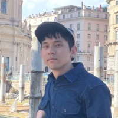

AI Engineer & Cybersecurity EnthusiastAI 工程師與資安技術愛好者

Hello, I'm Zong-Lin. I am an AI Engineer with an interdisciplinary background bridging Computer Science, Financial Technology, Mathematics, and Physics. My diverse background and extensive lab experience provide me with vigorous research capabilities, allowing me to approach system design with a robust, analytical mindset. 你好，我是宗霖。我是一名 AI 工程師，擁有資工、金融科技、數學與物理的跨領域學術背景。除了扎實的數物理論與快速學習的能力外，過往雙主修物理的訓練讓我累積了許多親手實作的經驗，培養出我追求嚴謹與極致的最佳化態度。
Currently based at Chunghwa Telecom Cybersecurity, my daily focus lies in optimizing LLM training and inference efficiency (employing tools like DeepSpeed ZeRO and QLoRA), fine-tuning massive models, deploying OCR tools, and developing AI agents natively integrated with cybersecurity tools. With rigorous academic research capabilities, I routinely manage comprehensive data streaming architectures leveraging Message Queues and robust cloud resources. 目前任職於中華資安國際。我的工作主要聚焦在優化 LLM 的訓練與推論效率（涵蓋 DeepSpeed ZeRO, QLoRA 等技術）、微調大型模型，以及 AI agent 與資安防護的工具開發，同時熟練應用 OCR 工具。具備嚴謹的論文研究能力，並善用於產線上部署 Message Queue (訊息佇列) 與雲端運算資源，處理並分析大規模的 streaming data。
Fine-tuning massive-scale models using DeepSpeed ZeRO and QLoRA techniques. Focused on high-throughput and VRAM-efficient LLM production.
善用 DeepSpeed ZeRO 與 QLoRA 技術進行大型模型微調。專注於打造高吞吐量及提升 VRAM 使用效率的 LLM 生產環境。
Developing sophisticated AI Agents, OCR tools, and robust cybersecurity software.
開發高度智慧的 AI Agents 與自動化資安分析工具，無縫結合光學字元辨識 (OCR) 實務應用與安防技術。
Managing distributed message queues (RabbitMQ/Kafka) to ingest massive streaming data at scale via Cloud infrastructures.
部署高效能分散式 Message Queue，建立足以負荷巨量 Streaming Data 的強健雲端微服務架構。
Chunghwa Telecom Cybersecurity中華資安國際
SinoPac Holdings永豐金控
National Cheng Kung University (NCKU)國立成功大學 (NCKU)
Department of Computer Science and Information Engineering.
M.S., Financial Technology & Information Engineering.
Advisor: Prof. Wei-Ta Chu
GPA: 3.9/4; completed all master's coursework within the first year of study.
資訊工程學系所
指導教授：朱威達教授 (Prof. Wei-Ta Chu)
GPA: 3.9/4；非純血資工背景，於入學首年即順利修畢所有碩士階段必選修學分。
National Central University (NCU)國立中央大學 (NCU)
B.S., Mathematics; Double Major in Physics.
數學系（雙主修：物理學系）。
Explore More Repositories on GitHub → 前往 GitHub 直擊更多實作專案與原始碼 →